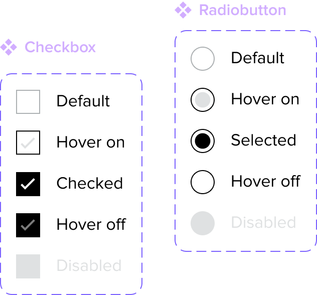
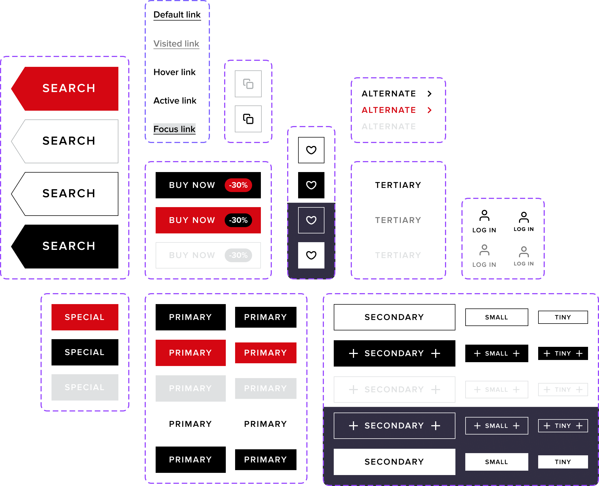
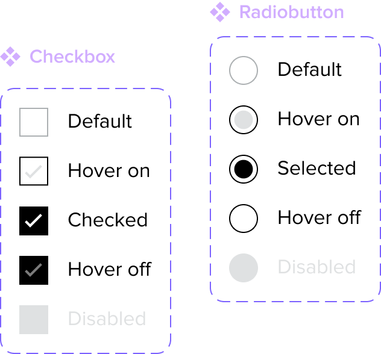
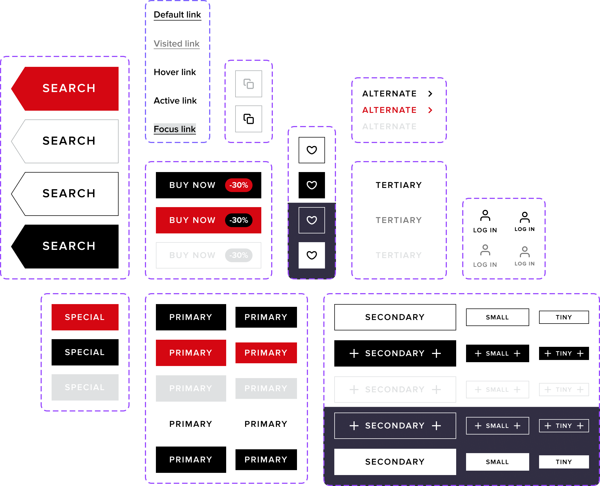
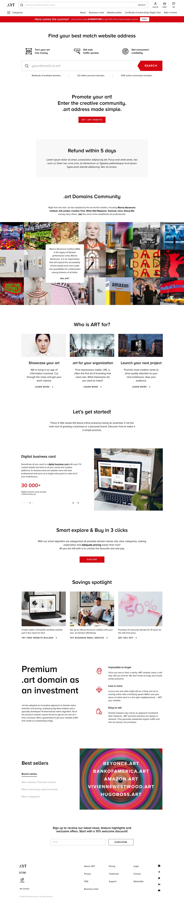
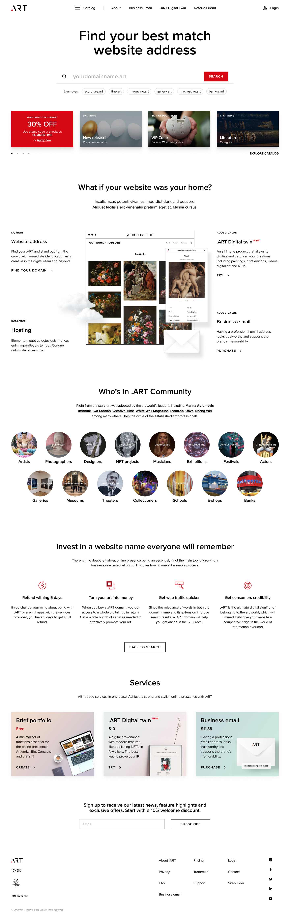

Project Case Study: Get.Art
Overview
Project: Get.Art Platform Design
Role: Lead Product Designer
Duration: 4 months
Challenge
Get.Art aims to become a digital hub for contemporary artists and collectors. The challenge was to create a platform that provides seamless interaction between artists, galleries, and collectors, emphasizing art discovery, purchase, and artist support.
Objectives
- Develop a visually appealing and user-friendly interface tailored to art enthusiasts.
- Facilitate direct communication between artists and collectors.
- Enable efficient browsing and categorization of art pieces.
- Ensure platform scalability for future features such as auction events and VR exhibitions.


 Client's area, domain management tool board
Reserved domain names' category page
Simple portfolio website builder
Client's area, domain management tool board
Reserved domain names' category page
Simple portfolio website builder
Process
-
Research and Discovery:
- Conducted interviews with artists and collectors to understand their needs and challenges.
- Analyzed successful art marketplaces to gather insights on effective features.
- Collaborated with artists to co-create feature lists and prioritized them based on user stories.
-
Design and Iteration:
- Created initial wireframes focusing on a clean and engaging visual style.
- Developed high-fidelity prototypes, showcasing artwork prominently to increase engagement.
- Ran usability tests with target users, iterating based on their feedback to enhance the overall experience.
-
User Testing and Feedback:
- Collaborated with early adopters, gaining qualitative feedback on the platform’s layout and navigation.
- Gathered insights to refine interaction pathways, ensuring a smooth purchase experience.
- Incorporated suggestions for features like artist profiles and saved favorites.
-
Implementation and Prioritization:
- Focused on creating an intuitive browsing experience with filter options like style, medium, and price.
- Implemented a direct messaging feature for collector-artist communication.
- Designed a modular platform allowing future additions such as auctions and virtual exhibitions.


 




A massive banner distracting attention from the target action
Not a very informative block
Not a very informative block
Not the most suitable place for the block
Partners' names only visible on hover
Links that lead away from the main flow
Too much information
It's unclear what the service is, its cost, and what it offers
Too much text

The headline is now larger; users read and understand the essence of the site more quickly
The central focus is now on the button. Nothing distracts. The new premium domain offer also helps users understand what domains are available through examples.
In this block, the promotional banner and popular categories are combined
The main advantages of the .ART infrastructure and domains are more visually evident
A more compact and understandable display of early adopters
Less emphasized secondary arguments
Simultaneous display of 3 more laconic service cards saved space and structurized content
Key Features of the Get.Art Platform
- Seamless Art Discovery: Customizable filters that help users easily find pieces they are passionate about.
- Direct Messaging: Enables collectors to directly communicate with artists, building relationships and supporting sales.
- Detailed Artist Profiles: Profiles include artist statements, exhibition history, and works, enhancing artist visibility.
- Curated Collections: Highlight curated galleries and featured artists to promote diverse artistic expressions.
- Favorites and Wishlist: Users can save artworks for future reference, enhancing long-term engagement.
Conclusion
The Get.Art platform successfully brought together artists and collectors, simplifying the process of art discovery, purchasing, and communication. The platform’s intuitive design and focus on user needs led to positive early feedback, setting the stage for additional feature rollouts and long-term growth.